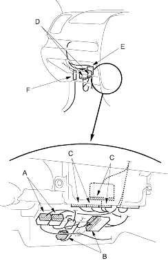
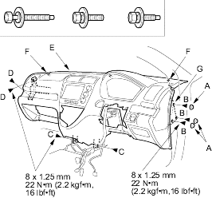

- From under the dash, disconnect the dashboard wire harness connectors (A), EPS sub wire harness connectors (B), engine compartment wire harness connectors (C), passenger's door wire harness connectors (D), side turn signal light connector (E) (for some models) and antenna lead (F) (roof antenna).

- Detach all of the harness and connector clips.
- From outside the driver's door, remove the caps (A), then remove the bolts (B, C, D) and lift up on the dashboard (E) to release it from the guide pins (F, G) on the body.
| Fastener Locations | ||
B  : Bolt, 3 : Bolt, 3 |
C : Bolt, 2 |
D : Bolt, 2 |

- Carefully remove the dashboard through the front door opening.
- Install the dashboard in the reverse order of removal and note these items:
- Make sure the dashboard fits onto the guide pins correctly.
- Apply liquid thread lock to the dashboard mounting bolts of the middle portion before reinstallation.
- Before tightening the bolts, make sure the each wire harness and control cables (manual A/C) are not pinched.
- Make sure the connectors are plugged in properly and the antenna lead, control cables (manual A/C) and air hose (auto A/C) are connected properly.
- Reconnect the negative cable to the battery.